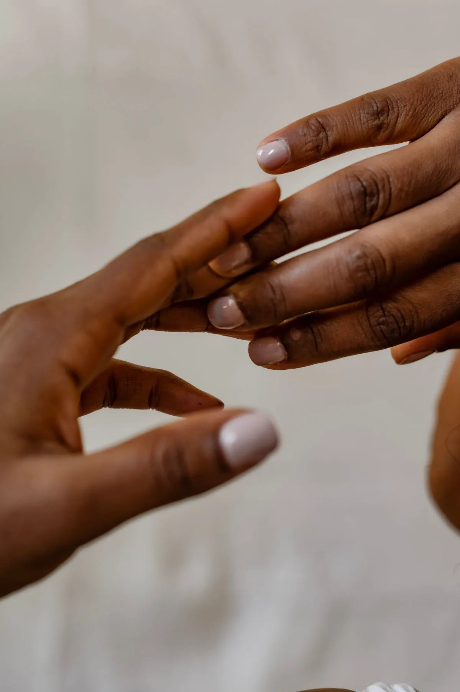
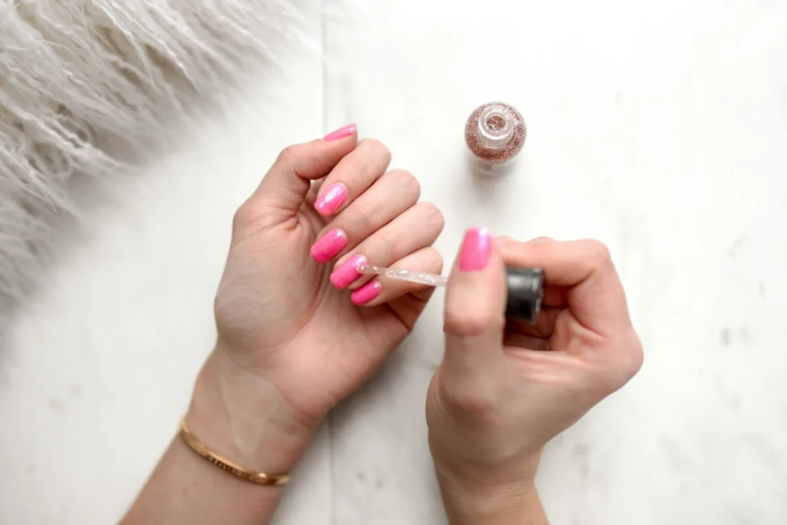
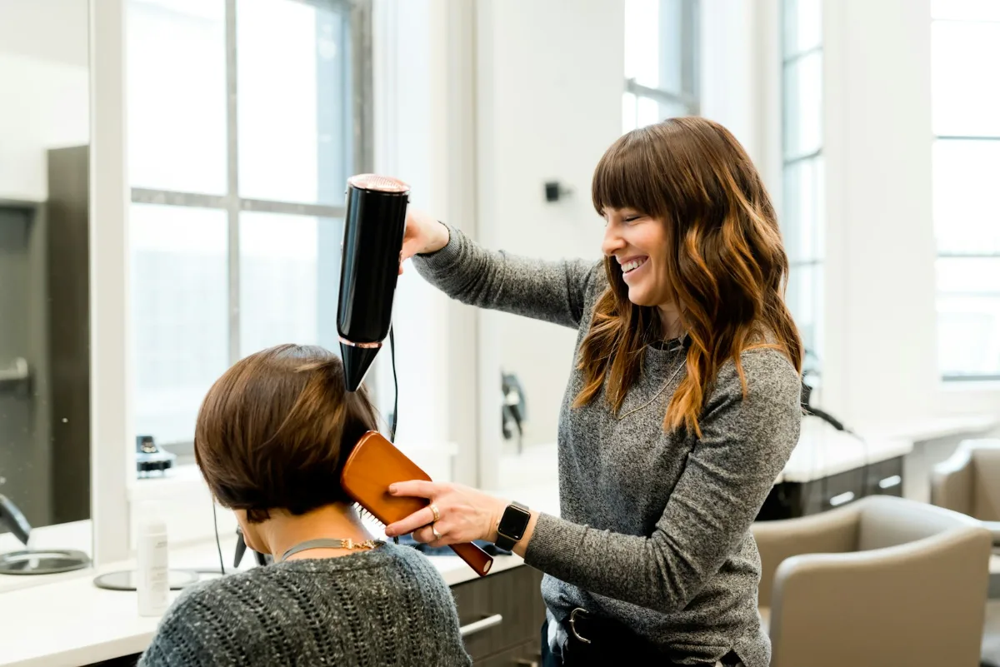
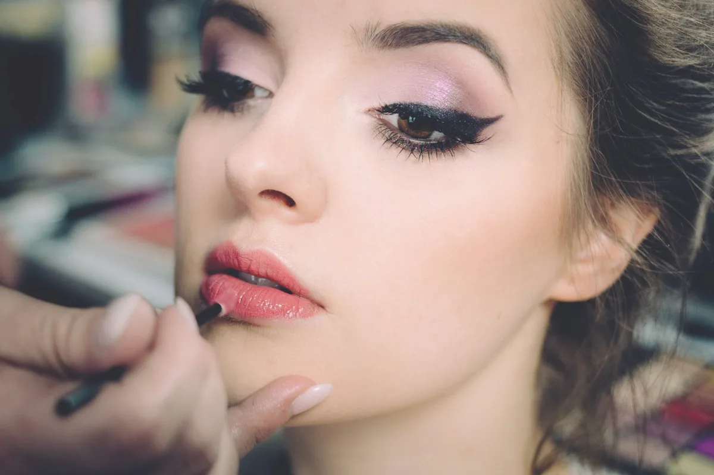
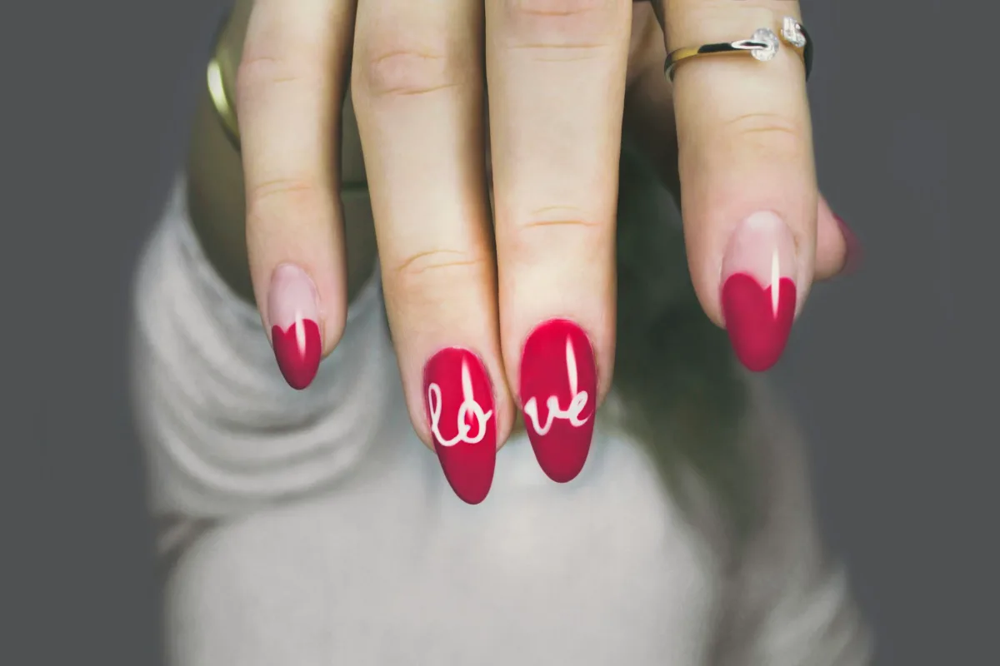
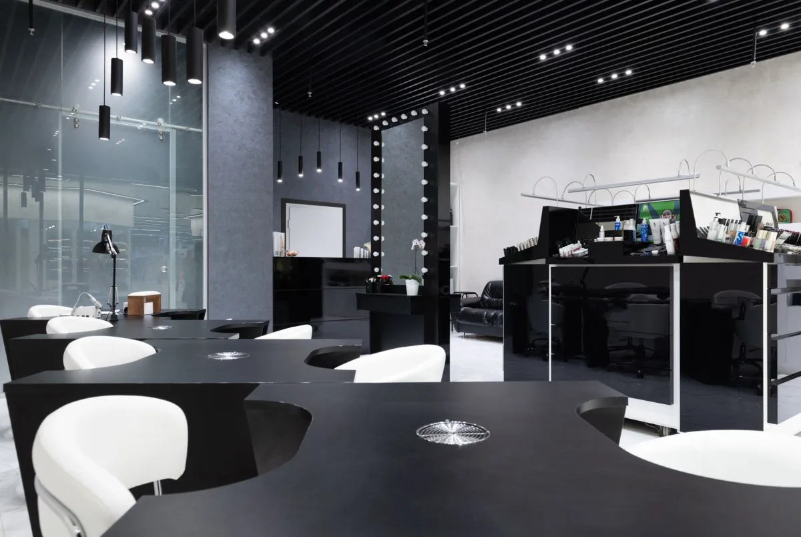
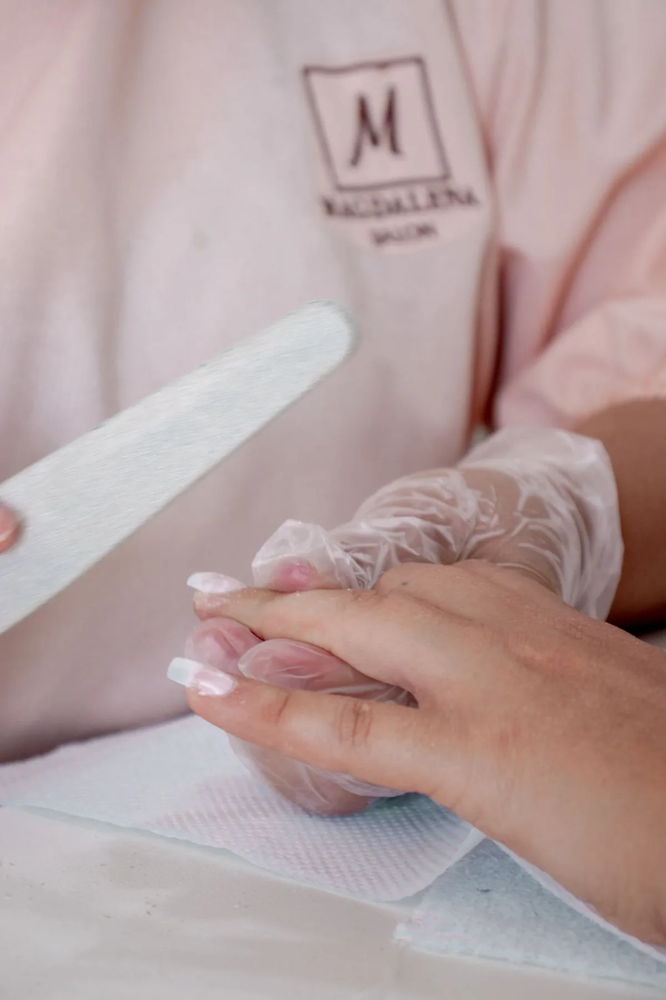
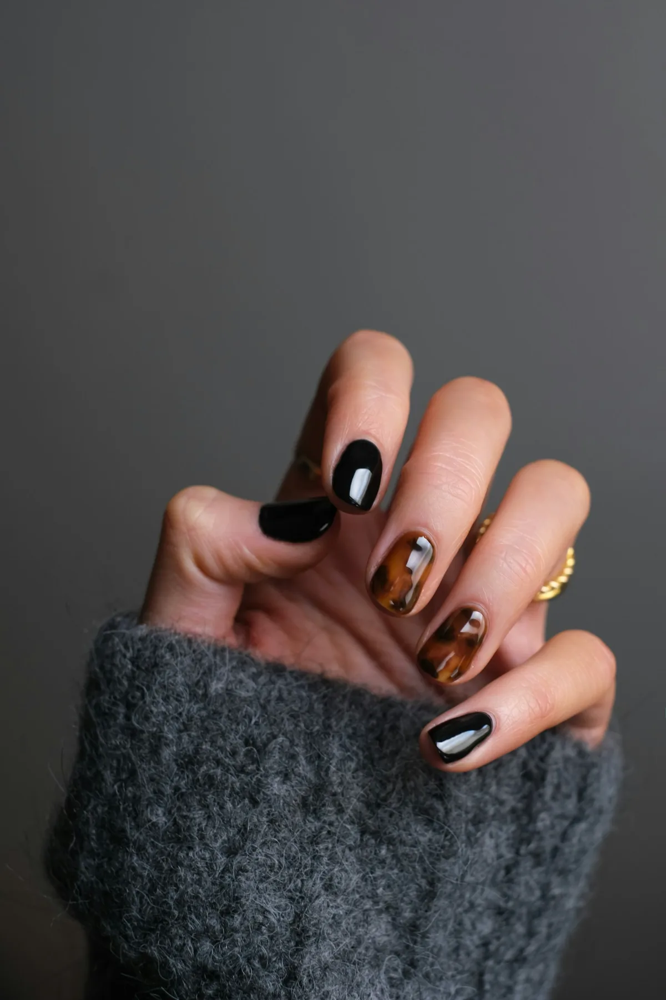
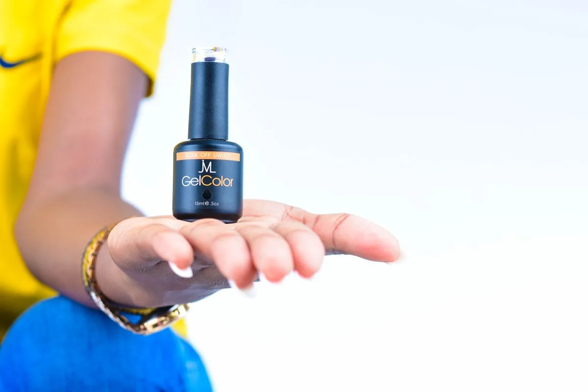
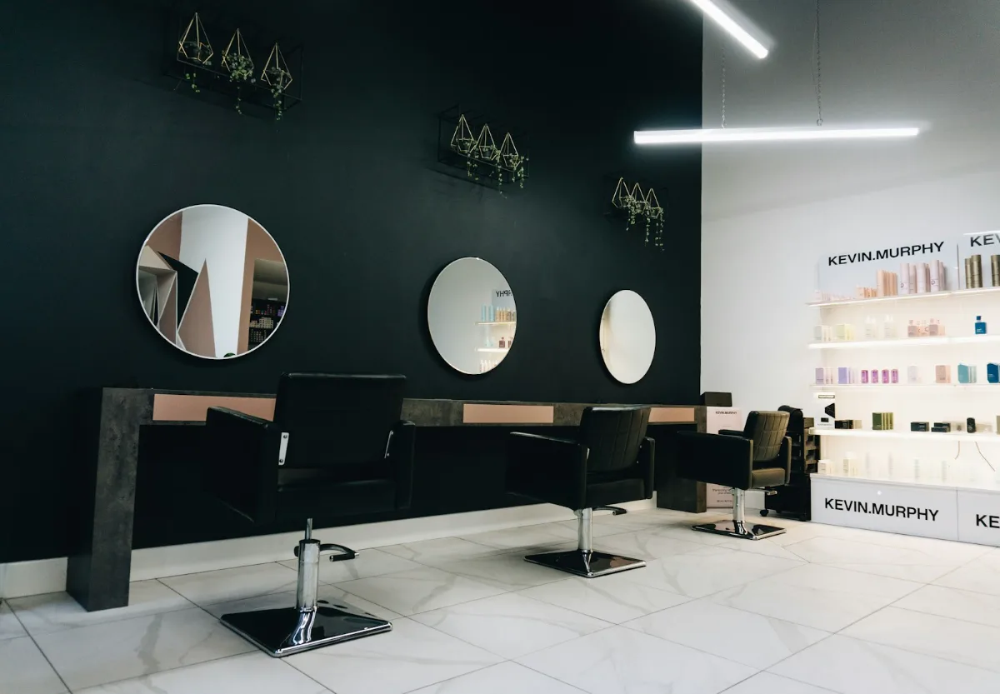

C. Guillermo Prieto 46
Cuauhtémoc, 06470 CDMX
Lun–Vie 10–20 · Sáb 9–19
55 6885 6070
Uñas · Cabello · Cejas · Maquillaje
El arte de ser tú misma, hasta en tus manos.
Somos un salón boutique con dos sucursales en CDMX: San Rafael y Polanco. Gelish que dura, acrílicas con estructura, color de cabello con intención y cejas que enmarcan. Todo con cita, sin prisas.
★ +16 mil seguidoras en IG
Desde 2021
Atención 100% con cita

Nail art de autor
diseños pintados a mano
Especialidades
Cuatro artes, un solo lugar.
De la uña al peinado: cada servicio con su propia artista y el mismo nivel de obsesión por el detalle.

01
Uñas
Gelish, acrílicas, rubber, pedicure y nail art a mano alzada.

02
Cabello
Corte, blower, tinte, balayage y tratamientos de hidratación.

03
Cejas y mirada
Diseño con hilo, henna y lifting de pestañas.

04
Maquillaje
Social, de novia y para sesiones. Con peinado si lo quieres todo.
Juega con el color
Prueba tu próximo tono.
Toca un esmalte y míralo en las uñas. ¿Se te antojó? Menciónalo al reservar y lo tenemos listo para tu cita.
Rosa Lalolita
El tono de la casa


La esencia Lalolita
Un salón de barrio, con alma de atelier.
“La belleza se siente mejor cuando se parece completamente a ti.”
Lalolita nació en 2021 en la colonia San Rafael, de la mano de Eddu Vázquez, como una alternativa al salón apresurado: un espacio cálido donde el diseño y la salud de tus uñas importan por igual, y donde el cabello, las cejas y el maquillaje reciben la misma dedicación.
Conoce nuestra historia
4.5
en Google118 reseñas · 4.4 San Rafael y 4.8 Polanco
0K
seguidoras@lalolita_nails
0+
años de historiadesde 2021 en la San Rafael
0
sucursalesSan Rafael y Polanco
Nuestro trabajo
Hecho a mano, todos los días.



Lo que dicen nuestras clientas
“Llevo dos años sin dejar que nadie más toque mis uñas. El acrílico me dura perfecto y el diseño siempre supera lo que pedí.”
“Fui por un balayage y salí con el pelo de mis sueños. Te explican todo y se nota que aman lo que hacen.”
“Me maquillaron y peinaron para mi boda civil. Puntuales, lindas, y el maquillaje aguantó todo el día.”
Ven como eres
Dos sucursales, un mismo cuidado.
Nuestra casa original en la San Rafael y, desde 2026, la nueva sucursal en Polanco. Elige la que te quede mejor: en las dos te esperamos igual.
Ver mapas y cómo llegar
San Rafael
Polanco · Nueva
Lago Tanganica 61
Granada, Miguel Hidalgo, 11520
Lun–Vie 11–20 · Sáb 10–18
56 1515 6061
Contacto
@lalolita_nails
Reservas por mensaje directo
Domingos
Cerrado en ambas sucursales
Tu momento empieza aquí.
Agenda por WhatsApp con la sucursal que prefieras. Confirmamos cada cita personalmente.
Reservar ahora →